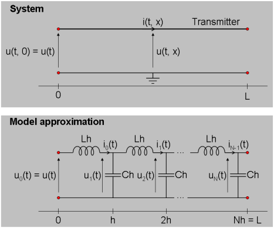
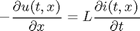
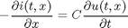
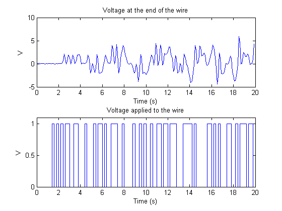
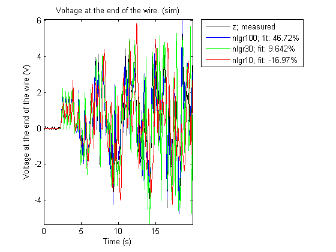
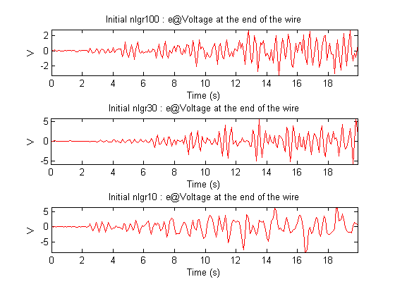
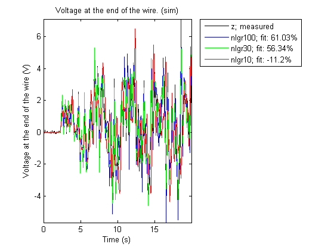
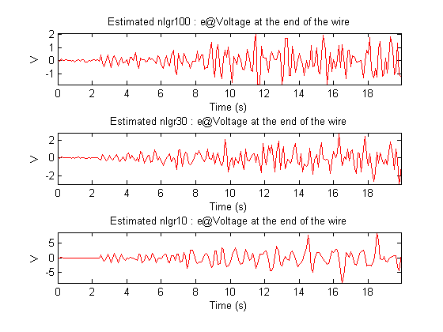
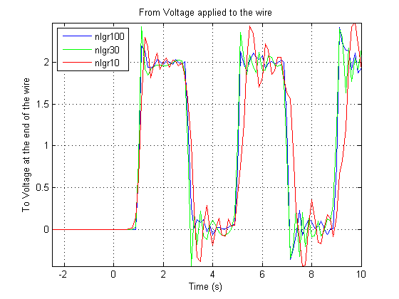

A Signal Transmission System: C MEX-File Modeling Using Optional Input Arguments
This tutorial considers the use of optional input arguments to IDNLGREY. The discussion will concentrate on how to do this for C-MEX types of model files, yet to some minor extent we will also address the most relevant parallels to MATLAB file modeling.
The basis for our discourse will be the signal transmission system (a telegraph wire) schematically depicted in the following figure.

Figure 1: Schematic view of a signal transmission system.
Contents
Signal Transmission Modeling
At a distance x (counted from where an input voltage is applied) in a telegraph wire flows at time t the current i(t, x). The corresponding voltage is u(t, x) and the relationship between current and voltage can be described by two coupled Partial Differential Equations (PDEs):


The equations above are often referred to as (a variant of) the so-called "Telegraph equation", with L and C being inductance and capacitance per unit length, respectively.
The telegraph equation can be approximated by a system of ordinary differential equations by only considering the current and the voltage at discrete distance points 0, h, 2h, ..., Nh, where h is the discretization distance and N the total number of such distances. After this approximation, the wire can be thought of as being composed of a number of structurally equal segments connected to each other in a chain. In the literature this type of approximation is commonly referred to as aggregation.
Let the voltage and the current at distance x = kh, for k = 0, 1, ..., N, at time t be denoted u_k(t) and i_k(t), respectively. Approximate d/dx u(t, x) and d/dx i(t, x) through the following simple difference approximations:
d u(t, x) u_{k+1}(t) - u_k(t)
--------- ~ ------------------- Forward approximation.
dx h d i(t, x) i_k(t) - i_{k-1}(t)
--------- ~ ------------------- Backward approximation.
dx hfor x = kh.
The reason for using the forward approximation for d/dx u(t, x) is that i_N(t) = 0 (open wire), so that the remaining N discretized currents can be modeled by the following N differential equations:
d i_k(t) 1
-------- = - -- (u_{k+1}(t) - u_k(t)) for k = 0, 1, 2, ..., N-1
dt LhSimilarly, as u_0(t) is a known input signal and no differential equation is needed to describe it, it is convenient to use the backward approximation scheme to model d/dx i(t, x) at the points h, 2h, ..., N:
d u_k(t) 1
-------- = - -- (i_k(t) - i_{k-1}(t)) for k = 1, 2, ..., N-1
dt Ch d u_N(t) 1 1
-------- = - -- (i_N(t) - i_{N-1}(t) = -- i_{N-1}(t)
dt Ch ChBy this we have now arrived at the model approximation shown in Figure 1, in which the equations have been expressed in terms of a number of interconnected coils and condensators.
Let us now introduce the 2*N states x1(t) = i_0(t), x2(t) = u_1(t), x3(t) = i_1(t), x4(t) = u_2(t), ..., x2N-1(t) = i_{N-1}(t), x2N(t) = u_N(t). Also, denote the input u(t) = u_0(t) and let the output be the voltage at the end of the wire, i.e., y(t) = x2N(t) = u_N(t). Apparent substitutions finally lead to the following state space model structure.
x1(t) = -1/(Lh)*(x2(t) - u(t))
x2(t) = -1/(Ch)*(x3(t) - x1(t))
x3(t) = -1/(Lh)*(x4(t) - x2(t))
x4(t) = -1/(Ch)*(x5(t) - x3(t))
...
x2N-1(t) = -1/(Lh)*(x2N(t) - x2N-2(t))
x2N(t) = 1/(Ch)*x2N-1(t)y(t) = x2N(t)
All in all, the above mathematical manipulations have taken us to a standard linear state space model structure, which very well can be handled by IDGREY - the linear counterpart of IDNLGREY. We will not perform any IDGREY modeling here, but instead show how optional input arguments may be used by IDNLGREY to enhance its modeling flexibility.
IDNLGREY Signal Transmission Model Object
To gain flexibility it is here desirable to have an IDNLGREY model object that immediately is able to deal with a wire of any length L. For modeling quality purposes, it should also be straightforward to vary the number of aggregated blocks N so that a good enough system approximation can be obtained. These requirements can be handled through the passing of N and L in the FileArgument property of an IDNLGREY object. The FileArgument property must be a cell array, but this array may hold any kind of data. In this application, we choose to provide N and L in a structure, and for a wire of length 1000 m we will try three different values of N: 10, 30 and 100. The following three FileArguments will subsequently be used when performing IDNLGREY modeling:
FileArgument10 = {struct('N', 10, 'L', 1000)}; % N = 10 --> 20 states.
FileArgument30 = {struct('N', 30, 'L', 1000)}; % N = 30 --> 60 states.
FileArgument100 = {struct('N', 100, 'L', 1000)}; % N = 100 --> 200 states.
The parsing and checking of the data contained in FileArgument must be carried out in the IDNLGREY model file, where it is up to the model file designer to implement this functionality. In order to obtain h and N in the function without any error checking the following commands can be used:
N = varargin{1}{1}.N;
h = varargin{1}{1}.L/N;Notice that FileArgument here corresponds to varargin{1}, which is the last argument passed to the model file. The file signaltransmission_m.m implements the signal transmission model. Type "type signaltransmission_m.m" to see the whole file.
The situation is a bit more involved when using C-MEX model files as will be done further on. In this case we do not beforehand know the number of states Nx, but it is computed in the main interface function and can thus be passed as an input argument to compute_dx and compute_y. The declaration of these functions become:
void compute_dx(double *dx, int nx, double *x, double *u, double **p,
const mxArray *auxvar)
void compute_y(double *y, int nx, double *x)where we have taken away the t-variable (not used in the equations) and instead included an integer nx as a second argument to both these functions. In addition, we have also removed the standard three trailing arguments of compute_y as these are not used to compute the output. With these changes, compute_dx and compute_y are called from the main interface function as follows.
/* Call function for state derivative update. */ compute_dx(dx, nx, x, u, p, auxvar);
/* Call function for output update. */ compute_y(y, nx, x);
The first part of compute_dx is shown below. ("type signaltransmission_c.c" displays the whole file in the MATLAB® command window.)
/* State equations. */
void compute_dx(double *dx, int nx, double *x, double *u, double **p,
const mxArray *auxvar)
{
/* Declaration of model parameters and intermediate variables. */
double *L, *C; /* Model parameters. */
double h, Lh, Ch; /* Intermediate variables/parameters. */
int j; /* Equation counter. */ /* Retrieve model parameters. */
L = p[0]; /* Inductance per unit length. */
C = p[1]; /* Capacitance per unit length. */ /* Get and check FileArgument (auxvar). */
if (mxGetNumberOfElements(auxvar) < 1) {
mexErrMsgIdAndTxt("IDNLGREY:ODE_FILE:InvalidFileArgument",
"FileArgument should at least hold one element.");
} else if (mxIsStruct(mxGetCell(auxvar, 0)) == false) {
mexErrMsgIdAndTxt("IDNLGREY:ODE_FILE:InvalidFileArgument",
"FileArgument should contain a structure.");
} else if ( (mxGetFieldNumber(mxGetCell(auxvar, 0), "N") < 0)
|| (mxGetFieldNumber(mxGetCell(auxvar, 0), "L") < 0)) {
mexErrMsgIdAndTxt("IDNLGREY:ODE_FILE:InvalidFileArgument",
"FileArgument should contain a structure with fields 'N' and 'L'.");
} else {
/* Skip further error checking to obtain execution speed. */
h = *mxGetPr(mxGetFieldByNumber(mxGetCell(auxvar, 0), 0,
mxGetFieldNumber(mxGetCell(auxvar, 0), "L"))) / (0.5*((double) nx));
}
Lh = -1.0/(L[0]*h);
Ch = -1.0/(C[0]*h);
...Worth stressing here is that FileArgument is passed to compute_dx in the variable auxvar. After declaring and retrieving model parameters (and also declaring intermediate variables, like h, auxvar is checked for consistency through a number of external interface routines (so-called mx-routines). These MATLAB routines allow you to create, access, manipulate, and destroy mxArray variables. Consult the MATLAB documentation on External Interfaces for more information about this. The final else-clause is executed if all checks are passed, in which case the value of the auxvar field N is used do determine the value of h. It and the model parameters L and C are finally used to compute the required parameter quantities Lh = -1/(L*h) and Ch = -1/(C*h). See "Tutorials on Nonlinear Grey Box Model Identification: Creating IDNLGREY Model Files" for complimentary information about FileArgument.
With Lh and Ch computed, the second part of compute_dx is as follows. Notice in particular how nx is used in the for-loop of compute_dx to define the number of states of the present model.
...
/* x[0] : Current i_0(t). */
/* x[1] : Voltage u_1(t). */
/* x[2] : Current i_1(t). */
/* x[3] : Voltage u_1(t). */
/* ... */
/* x[Nx-2]: Current i_Nx-1(t). */
/* x[Nx-1]: Voltage u_Nx(t). */
for (j = 0; j < nx; j = j+2) {
if (j == 0) {
/* First transmitter section. */
dx[j] = Lh*(x[j+1]-u[0]);
dx[j+1] = Ch*(x[j+2]-x[j]);
} else if (j < nx-3) {
/* Intermediate transmitter sections. */
dx[j] = Lh*(x[j+1]-x[j-1]);
dx[j+1] = Ch*(x[j+2]-x[j]);
} else {
/* Last transmitter section. */
dx[j] = Lh*(x[j+1]-x[j-1]);
dx[j+1] = -Ch*x[j];
}
}
}The output update function compute_dy is much simpler than the state update function:
/* Output equation. */
void compute_y(double *y, int nx, double *x)
{
/* y[0]: Voltage at the end of the transmitter. */
y[0] = x[nx-1];
}We are now in a position where we straightforwardly can enter the above information into three different IDNLGREY objects, one for N = 10, one for N = 30 and one for N = 100. Notice that the differences when creating these models are the order, the initial state vector and the used optional input argument, but that is it.
FileName = 'signaltransmission_c'; % File describing the model structure. Parameters = struct('Name', {'Inductance per unit length' ... % Initial parameters. 'Capacitance per unit length'}, ... 'Unit', {'H/m' 'F/m'}, ... 'Value', {0.99e-3 0.99e-3}, ... 'Minimum', {eps(0) eps(0)}, ... % L, C > 0! 'Maximum', {Inf Inf}, ... 'Fixed', {false false}); % A. Signal transmission model with N = 10; Order10 = [1 1 2*FileArgument10{1}.N]; % Model orders [ny nu nx]. InitialStates10 = zeros(2*FileArgument10{1}.N, 1); % Initial intitial states. nlgr10 = idnlgrey(FileName, Order10, Parameters, InitialStates10, 0, ... 'FileArgument', FileArgument10, ... 'Name', 'Signal transmission 10', 'TimeUnit', 's'); % B. Signal transmission model with N = 30; Order30 = [1 1 2*FileArgument30{1}.N]; % Model orders [ny nu nx]. InitialStates30 = zeros(2*FileArgument30{1}.N, 1); % Initial intitial states. nlgr30 = idnlgrey(FileName, Order30, Parameters, InitialStates30, 0, ... 'FileArgument', FileArgument30, ... 'Name', 'Signal transmission 30', 'TimeUnit', 's'); % C. Signal transmission model with N = 100; Order100 = [1 1 2*FileArgument100{1}.N]; % Model orders [ny nu nx]. InitialStates100 = zeros(2*FileArgument100{1}.N, 1); % Initial intitial states. nlgr100 = idnlgrey(FileName, Order100, Parameters, InitialStates100, 0, ... 'FileArgument', FileArgument100, ... 'Name', 'Signal transmission 100', 'TimeUnit', 's');
The names and units of the three signal transmission models are also set, whereupon the sizes of the models are textually confirmed.
set(nlgr10, 'InputName', 'Voltage applied to the wire', 'InputUnit', 'V', ... 'OutputName', 'Voltage at the end of the wire', 'OutputUnit', 'V'); set(nlgr30, 'InputName', nlgr10.InputName, 'InputUnit', nlgr10.InputUnit, ... 'OutputName', nlgr10.OutputName, 'OutputUnit', nlgr10.OutputUnit); set(nlgr100, 'InputName', nlgr10.InputName, 'InputUnit', nlgr10.InputUnit, ... 'OutputName', nlgr10.OutputName, 'OutputUnit', nlgr10.OutputUnit); nlgr10 nlgr30 nlgr100
Time-continuous nonlinear state-space model defined by 'signaltransmission_c' (MEX-file):
dx/dt = F(t, u(t), x(t), p1, p2, FileArgument)
y(t) = H(t, u(t), x(t), p1, p2, FileArgument) + e(t)
with 1 input, 20 states, 1 output, and 2 free parameters (out of 2).
Time-continuous nonlinear state-space model defined by 'signaltransmission_c' (MEX-file):
dx/dt = F(t, u(t), x(t), p1, p2, FileArgument)
y(t) = H(t, u(t), x(t), p1, p2, FileArgument) + e(t)
with 1 input, 60 states, 1 output, and 2 free parameters (out of 2).
Time-continuous nonlinear state-space model defined by 'signaltransmission_c' (MEX-file):
dx/dt = F(t, u(t), x(t), p1, p2, FileArgument)
y(t) = H(t, u(t), x(t), p1, p2, FileArgument) + e(t)
with 1 input, 200 states, 1 output, and 2 free parameters (out of 2).
Input-Output Data
At hand is simulated input-output data from a signal transmission wire of length 1000 m. This data was simulated using the above aggregated model structure, but a much larger N (1500) was employed. The simulation was performed during 20 seconds, using a sampling rate of 0.1 seconds. The model parameters used were L = C = 1e-3 and the starting point was a zero voltage wire (all initial states are thus zero). Both model parameters are admittedly much higher than for a typical signal transmission wire, but were so chosen to better illustrate the transport delay involved for this type of systems. We load this data and put it into an IDDATA object z:
load(fullfile(matlabroot, 'toolbox', 'ident', 'iddemos', 'data', 'signaltransmissiondata')); z = iddata(vout, vin, 0.1, 'Name', 'Signal transmission', ... 'InputName', 'Voltage applied to the wire', 'InputUnit', 'V', ... 'OutputName', 'Voltage at the end of the wire', ... 'OutputUnit', 'V', 'Tstart', 0, 'TimeUnit', 's');
A plot of the input-output data clearly unveils the transport delay from applied voltage to the output voltage at the end of the wire. The first input voltage pulse at around 1.4 seconds shows up in the output roughly a second later.
figure('Name', [z.Name ': input-output data']); plot(z);
Figure 2: Input-output data from a signal transmission system.
Performance of the Initial Signal Transmission Models
How well do these three initial models perform? Let us investigate this by conducting model simulations using COMPARE. From an execution point of view, it is here vital that the initial states are not estimated, thus the choice of zero initial state vectors. The reason for this is that the number of states is very high, especially for nlgr100 (= 200), and that the estimation of the initial state vectors would then result in really lengthy computations.
figure; compare(z, nlgr100, nlgr30, nlgr10, 'init', 'z');
Figure 3: Comparison between true output and the simulated outputs of three initial signal transmission models.
In terms of fit, there is a significant difference between the three models and, as expected, the most complex model outperforms the other two. The difference in modeling power is perhaps best viewed by looking at the prediction errors of each model.
e = {pe(z, nlgr100, 'z') pe(z, nlgr30, 'z') pe(z, nlgr10, 'z')};
figtitle = {'nlgr100 : e@' 'nlgr30 : e@' 'nlgr10 : e@'};
figure('Name', [z.Name ': prediction errors']);
for i = 1:3
subplot(3, 1, i);
plot(e{i}, 'r');
title(['Initial ' figtitle{i} z.OutputName{1}]);
axis('tight');
end
 Figure 4: Prediction errors obtained with the three initial IDNLGREY signal transmission models.
Parameter Estimation
Although we have here started off with almost the correct parameter values of the true system, this does not necessarily mean that these values are the ones producing the best model fit. Let us investigate this by estimating the two model parameters of the three signal transmission models using PEM. These computations may take some time.
nlgr100 = pem(z, nlgr100, 'Display', 'On', 'cov', 'none'); nlgr30 = pem(z, nlgr30, 'cov', 'none'); nlgr10 = pem(z, nlgr10, 'cov', 'none');
Criterion: Trace minimization
Scheme: Trust-Region Reflective Newton (LSQNONLIN, LargeScale = 'On')
--------------------------------------------------------------
Norm of First-order
Iteration Cost step optimality
--------------------------------------------------------------
0 0.97633 - -
1 0.82623 2.35e-006 4.05e+006
2 0.638348 1.54e-006 4.31e+006
3 0.548893 1.66e-006 4.48e+006
4 0.52233 1.42e-006 3.71e+006
5 0.52233 1.35e-006 3.71e+006
6 0.52233 1.35e-006 3.71e+006
7 0.52233 1.35e-006 3.71e+006
8 0.52233 1.35e-006 3.71e+006
9 0.52233 1.35e-006 3.71e+006
10 0.52233 1.35e-006 3.71e+006
11 0.52233 1.35e-006 3.71e+006
12 0.52233 1.35e-006 3.71e+006
13 0.52233 1.35e-006 3.71e+006
14 0.52233 1.35e-006 3.71e+006
15 0.52233 1.35e-006 3.71e+006
16 0.52233 1.35e-006 3.71e+006
17 0.52233 1.35e-006 3.71e+006
18 0.52233 1.35e-006 3.71e+006
19 0.52233 1.35e-006 3.71e+006
20 0.52233 1.35e-006 3.71e+006
--------------------------------------------------------------
Performance of the Estimated Signal Transmission Models
The Final Prediction Error (FPE) criterion applied to the estimated models continues to indicate that the most complex model is superior:
fpe(nlgr100, nlgr30, nlgr10)
0.5328 0.6689 4.3384
The estimated parameter values are not changed that much as compared to the initial values. As can be seen below, an interesting point is that the parameter values of the two least involved models actually move further away from the true parameter values, whereas the opposite occurs for the most complex model. There are several reasons for why this might happen, e.g., a too coarse aggregation or that the minimization procedure ended up with parameter values corresponding to a local minimum.
disp(' True nlgr100 nlgr30 nlgr10'); ptrue = [1e-3; 1e-3]; fprintf(' %1.7f %1.7f %1.7f %1.7f\n', ... [ptrue'; getpvec(nlgr100)'; getpvec(nlgr30)'; getpvec(nlgr10)']);
True nlgr100 nlgr30 nlgr10 0.0010000 0.0009949 0.0009759 0.0009742 0.0010000 0.0009949 0.0009759 0.0009742
Next, we again utilize COMPARE to perform simulations of the three estimated signal transmission models.
figure; compare(z, nlgr100, nlgr30, nlgr10, 'init', 'z');
Figure 5: Comparison between true output and the simulated outputs of three estimated signal transmission models.
In all three cases we get a slightly improved fit. Although small, the improvement can be recognized by comparing the prediction errors obtained after and before parameter estimation.
e = {pe(z, nlgr100, 'z') pe(z, nlgr30, 'z') pe(z, nlgr10, 'z')};
figtitle = {'nlgr100 : e@' 'nlgr30 : e@' 'nlgr10 : e@'};
figure('Name', [z.Name ': prediction errors']);
for i = 1:3
subplot(3, 1, i);
plot(e{i}, 'r');
title(['Estimated ' figtitle{i} z.OutputName{1}]);
axis('tight');
end
 Figure 6: Prediction errors obtained with the three estimated IDNLGREY signal transmission models.
We conclude this tutorial by looking at the unit step responses of the estimated signal transmission models. As can be seen, all these models seem to be able to pick up the transport delay. However, the poles of these linear models are all located on the imaginary axes, i.e., on the stability boundary. It is well-known that simulations of such models are delicate to perform and might result in oscillating step responses of the kind shown in this figure.
The main problem here is that this variant of the telegraph equation does not model any losses; such effects can be included by adding "resistors" (in series with the coils) and "resistors of conductance" (in parallel with the condensators) to each Lh-Ch sub-block of Figure 1. By this, the models will become more "stable" and simulations will be "easier".
figure('Name', [z.Name ': step responses']); step(nlgr100, nlgr30, nlgr10); grid on; legend('nlgr100', 'nlgr30', 'nlgr10', 'Location', 'NorthWest'); axis('tight');
Figure 7: Step responses of three estimated IDNLGREY signal transmission models.
Conclusions
This tutorial has first and foremost addressed how to use optional input file arguments when doing IDNLGREY modeling. We focused on C-MEX type of modeling, but indicated how to do this with MATLAB files too. For certain kinds of systems, it turns out to be beneficial (model reuse) to design a model file with more flexibility than normal, e.g., in terms of the number of states to use. The signal transmission system treated in this tutorial is one example in this category.
Additional Information
For more information on identification of dynamic systems with System Identification Toolbox™ visit the System Identification Toolbox product information page.